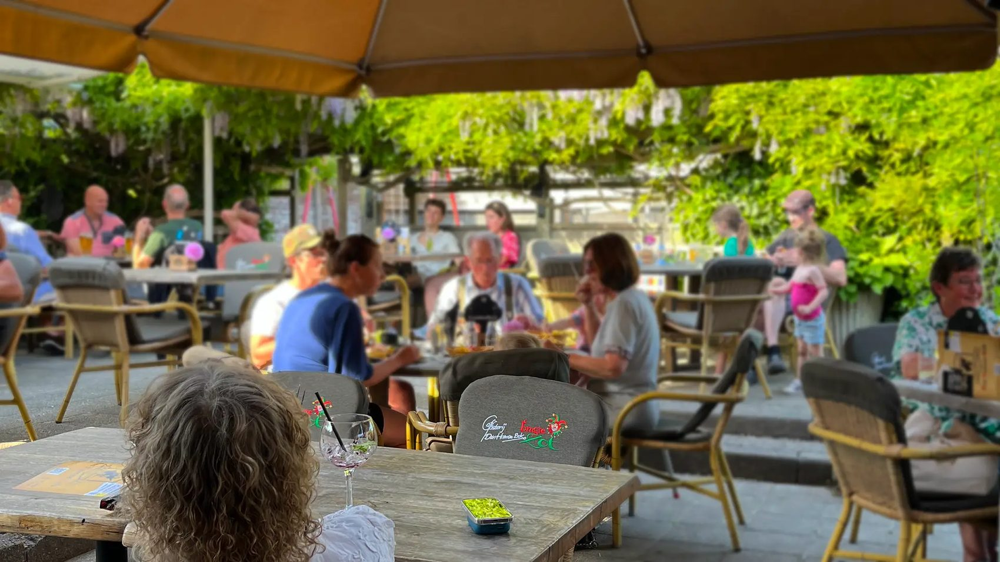
Binnenlopen staat bij de Bok altijd vrij
Een borrel, een lekker hapje en gezelligheid aan de Hoge Ham in Dongen. Brand van de tap, een uitgebreide bierkaart en gerechten volgens eigen recept.
Woensdag t/m zaterdag vanaf 16.00 uur · keuken tot 21.00 uur
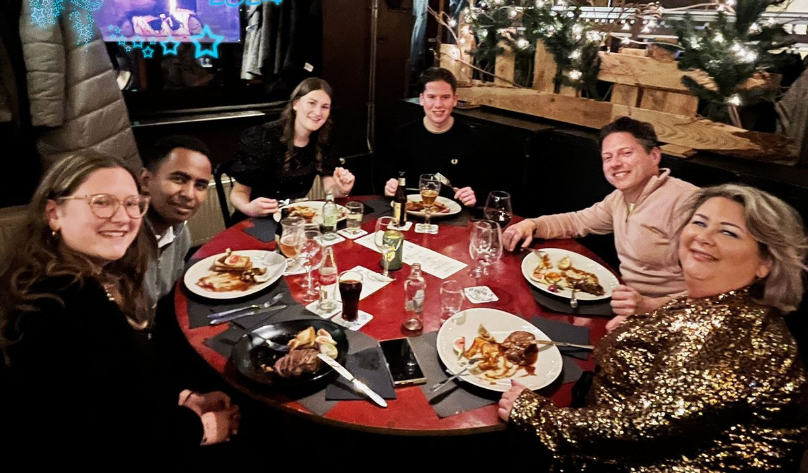
Kerstdiners 2026
Traditiegetrouw een vijfgangen verrassingsdiner, met een bijpassend wijn- of speciaalbierarrangement als je wilt. Na het diner proosten we buiten bij het haardvuurtje met een glühwein.
Een lekkere hap naast het potje bier
Van lunch op het tuinterras tot een bord eten aan de bar. Onze gerechten maken we volgens eigen receptuur, met vlees van 't Smaakhuys en stokbrood van Bakkerij Pim Filius.
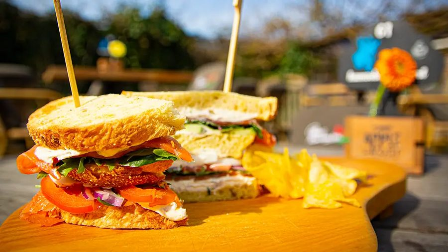
Lunch
Sandwiches, stokbroodjes en soep.
apr t/m sep · vr & za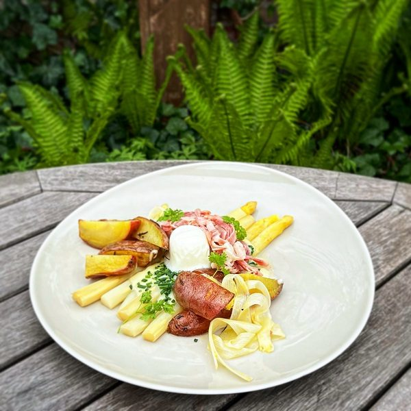
Diner
Burgers, saté, salades en de Bokse special.
16.00 – 21.00 uur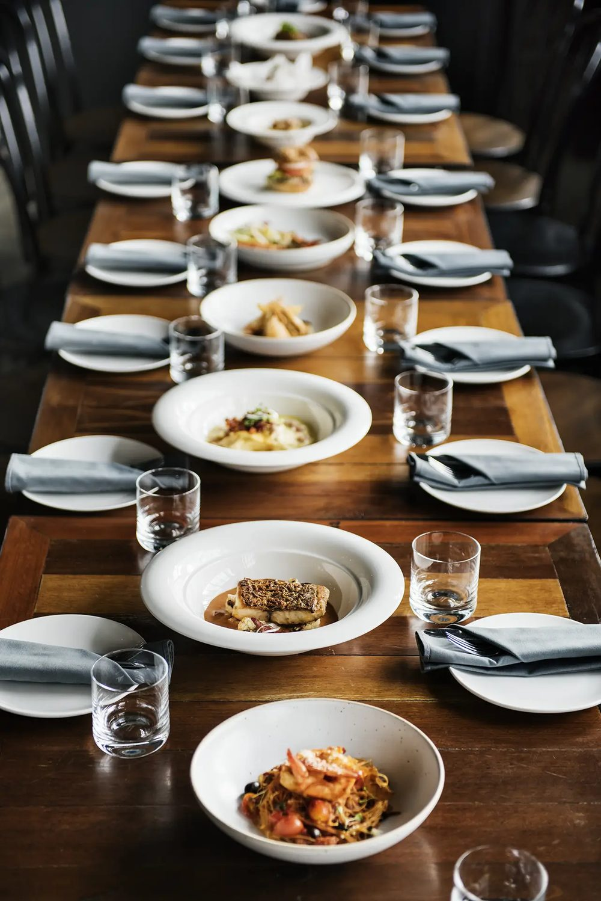
Borrel
Borrelplank, Bokse Ballen en de Spritz Tree.
tot sluitingstijd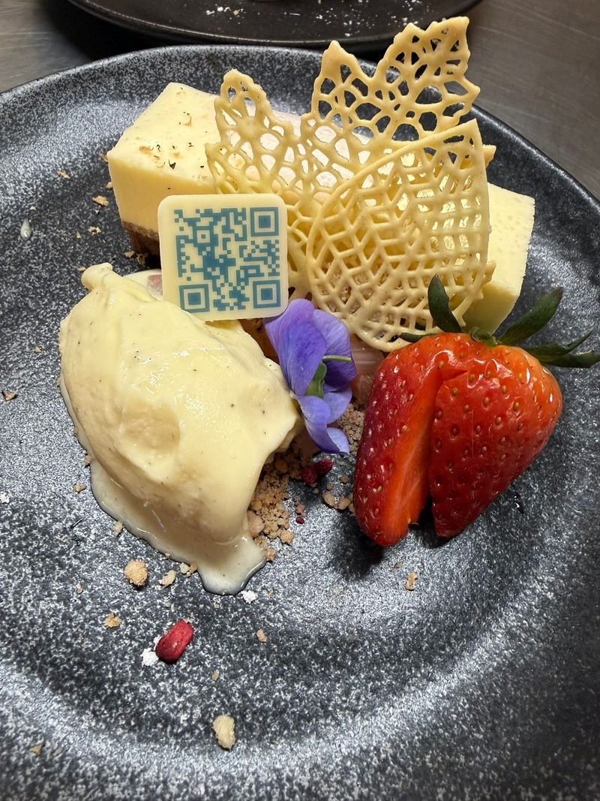
Zoet
Lopend chocoladetaartje, dessertplank en wafels.
ook voor bij de koffie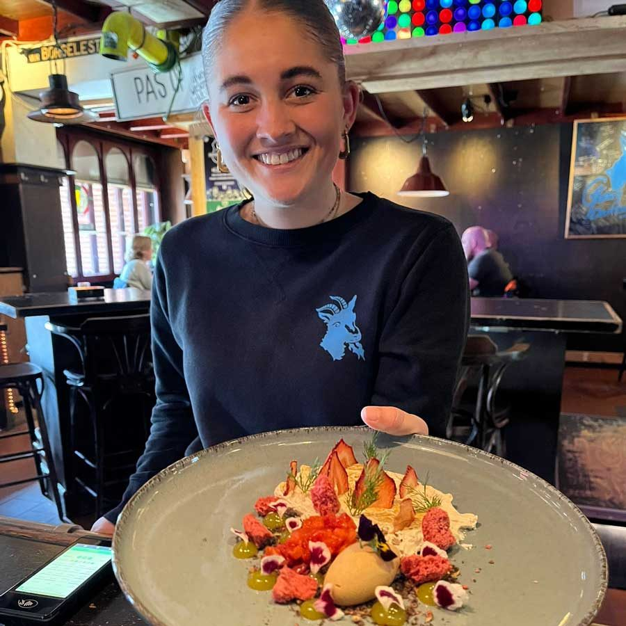
Bokse klassiekers
Gerechten die al jaren bij de Bok horen.
- Bokse soep€ 8,40Pittige tomaten-groentesoep met gehaktballetjes
- Stokbroodje Boksti€ 8,40Krokante gehaktrol van 't Smaakhuys met mayonaise en chilisaus
- Stokbroodje Fonzerelli€ 8,40Pittig gebakken roerei met vlees en knoflooksaus
- Frietje Bok€ 14,15Uitsmijter ham-kaas op een gevuld bord frietjes
- Kippendij- of varkenshaassaté€ 18,35Met friet, of met stokbrood (€ 17,35)
Dinergerechten bestel je tussen 16.00 en 21.00 uur. Reserveren is niet nodig: loop gewoon binnen.
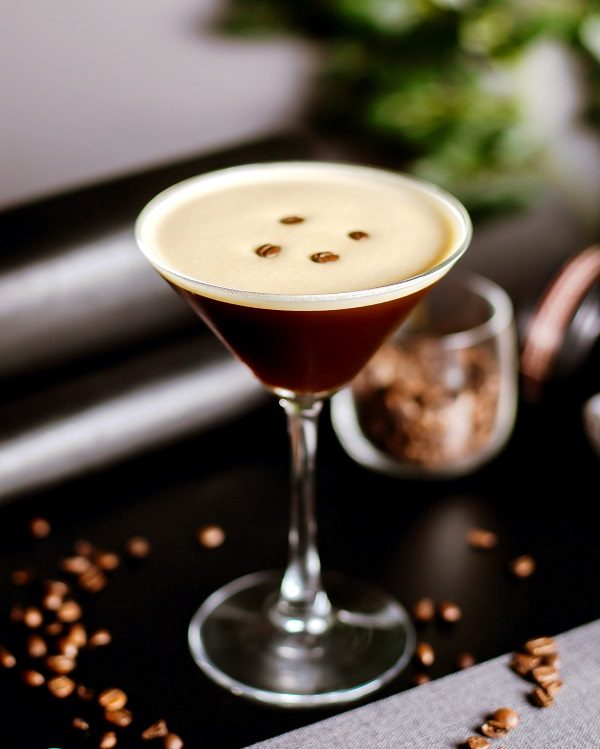
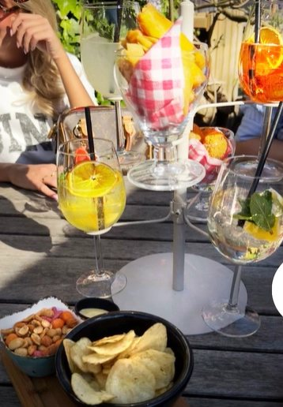
Brand Proeflokaal, en nog veel meer
Al meer dan dertig jaar schenken we Brand Pilsener van de tap. Daarnaast hebben we een uitgebreide bierkaart met streek-, Belgisch en internationaal bier, en een wisseltap met steeds iets nieuws.
- Maverick Monk 8,4%
- Kompaan Battle Royale 6,0%
- Kwaremont Bok 6,6%
- Kompaan Lefgozer 6,0%
- Brand Dubbelbock 7,5%
Twijfel je? Kies de SpeBi Boom: vier proefglazen van het seizoensbier van de tap. Liever een cocktail of een verse limonade? Ook die staan op de kaart.
Bekijk de drankenBinnenkort in de Bok
Er is altijd wel iets te doen aan de Hoge Ham.
7e Dongense Bockentocht
Bikken, bokken, biken: najaarsbieren proeverij samen met Opener & LOUD.
Bokse Beestenboel
De 11-11 opwarmer met DJ Tibbe. Deur open om 21.11 uur, verkleed is gratis entree.
Kerstdiners
Vijfgangen verrassingsdiner, daarna glühwein bij het haardvuurtje en de dansvloer op.
Besloten feesten
Op zondag is de Bok van jullie: voor feestjes en partijen. Bel ons voor de mogelijkheden.
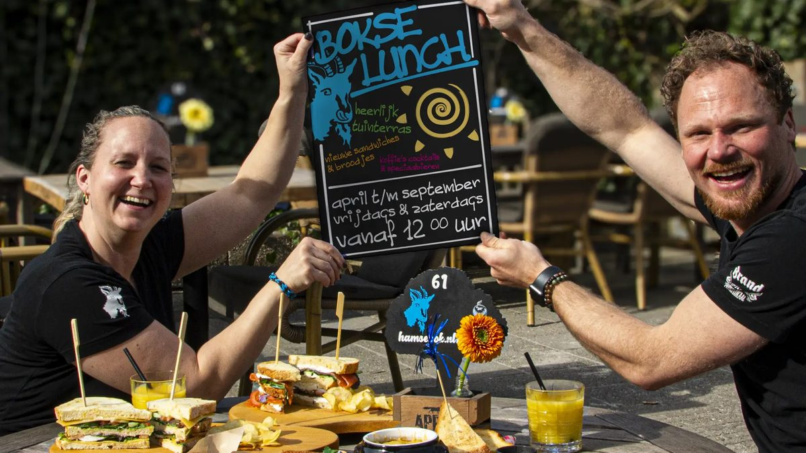
Het hart en de ziel van de Hoge Ham
In 1984 namen Denny & Fon Café Den Hamse Bok over. Na de uitbreiding van de kleine naar de grote Bok in 1998 werd het Café Gasterij Den Hamse Bok. Sinds 2015 staan Giselle en Ferry samen met Denny en Fon aan het roer.
Een borreltje met een lekker hapje, gezelligheid en gastvrijheid: daar draait het om. En als na 21.00 uur de disco lampen gaan knipperen, voelen jonge én oude bokken zich hier thuis.
"Dat café daar aan de Hoge Ham, ja 'de Bok' die zal altijd bestaan; 'de Hamse' zal nooit meer vergaan!"Uit het Hamse Bok lied, dat al sinds 1984 elk weekend klinkt
Een kijkje bij de Bok
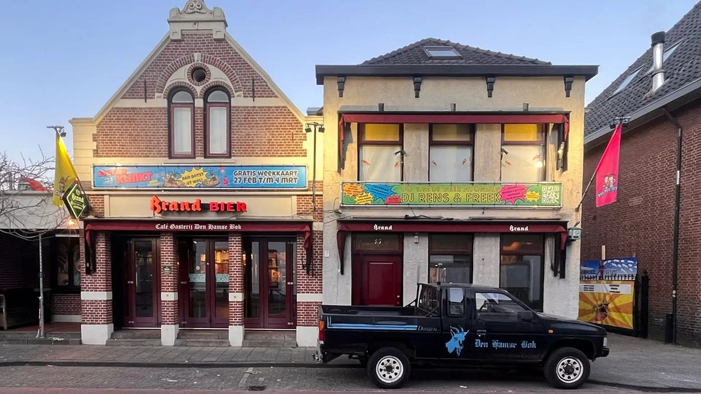
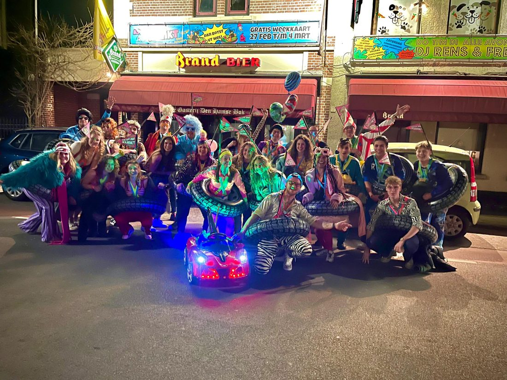
Kom gezellig langs
Reserveren is niet nodig: binnenlopen staat vrij. Een vraag, of een besloten feest op zondag? Stuur een appje of bel ons.
Café Gasterij Den Hamse Bok
Op dinsdag t/m zaterdag reageren we gemiddeld binnen 60 minuten op WhatsApp.
- Maandag & dinsdag
- gesloten
- Woensdag & donderdag
- 16.00 – 01.00
- Vrijdag & zaterdag
- 16.00 – 02.00
- Zondag
- besloten
Goed om te weten
Op de hoogte blijven? Sla 0162 313 256 op als 'Den Hamse Bok' en stuur je naam via WhatsApp. Dan krijg je de Bokse B@bbel met alle ins & outs.